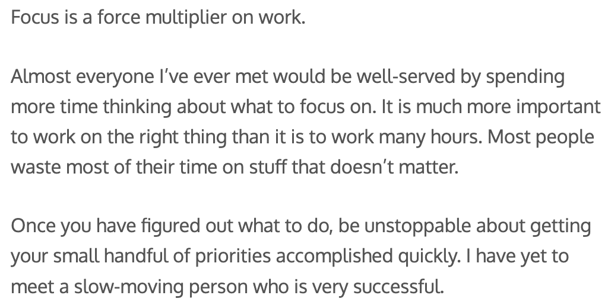
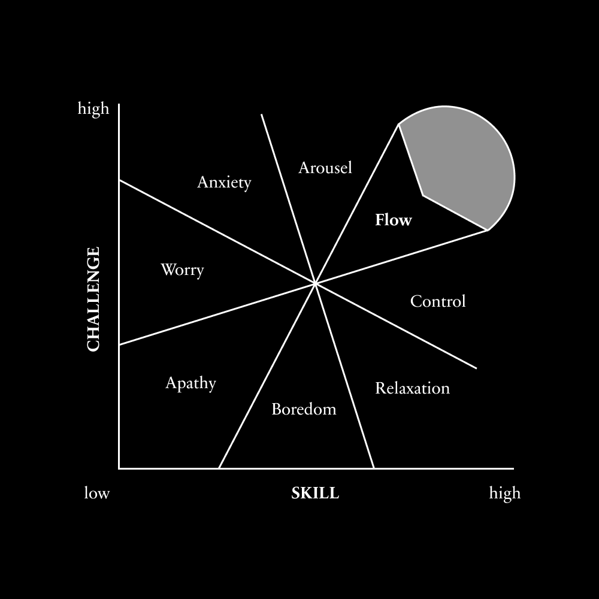

如何变得极度专注，专注到"违规"
你距离自己真正能做到的，还差得远。
而一旦你学会如何解锁这股力量，你就能做到大多数人认为不可能的事。
深度工作体系（有心理学、表现科学和哲学背书）是第一步，光这一步就能带你走得很远。但如果你想再上一个层级，我们正处在一个不可思议的时代：你可以利用安全性很高的聪明药（nootropics）和肽（peptides）来取得竞争优势——它们真的有效，不像过去那些"燃脂剂"，吃完只是让你觉得有点发热、有点麻。
我接下来要分享的，就是让我不再对"大多数人眼中的难事"感到抵触的东西。
我几乎可以控制自己能产生多少好点子、能工作多久。
很多人不知道（因为我很少在这里讲，但以后会讲得更多）：我热爱健身和生物化学。过去 15 年，研究任何处于最前沿的技术的科学和方案，都是我的"罪恶快感"——无论是用于生产力的 AI、用于金融的加密货币，还是用于健康的肽。肽就是健康领域的比特币，而且它会长久存在。
我喜欢拿自己的身体做实验，因为它让我通过经验而非理论来理解身体如何运作。是的，这有风险，就像所有"做成大事所需的事情"都有风险一样（比如每天盯着屏幕干 12 个小时、投资股票或加密货币、每晚吃麦当劳配啤酒——血压飙升到可能早逝，就像打类固醇的健美运动员因左心室肥厚（LVH）而死，甚至只是开车都有风险），我们待会儿会讨论这一点。
如果你把创业当成一项运动，那么你就是其中的创始人；如果把健美当成运动，你就是健身房里的那个人；或者你只是一个想进入更深专注状态、获得一点优势、让它复利成巨大优势的人——这封信就是写给你的。
深度工作的心理学与哲学
先引用一句 Sam Altman 的话开场：

"我不关心最新的深度工作技巧。
我不关心你工作时戴一顶帽子来收窄视野。
我不关心你把手机调成黑白来恢复多巴胺水平。
我关心的是什么有效。"
如果你需要靠"创可贴式"的小技巧才能坐下来干活，说明你缺了 3 样东西——它们决定了你 99% 的"坐下来把该干的活干掉"的能力。
要进入你人生中最深的专注状态，首先，你必须理解是什么驱使人即使不想工作也能工作。然后，你需要优化大脑消化和管理信息的方式。最后，你需要把你的日程结构化成模拟狩猎的方式，让你能利用那颗被设计成狩猎采集者的大脑。
1）最好的专注技巧是：清楚知道自己要做什么、为什么做、什么时候必须做完，以及具体怎么做。

清晰、重要性、紧迫感。这些是防止分心侵入你参照框架的关键要素。
- 要获得清晰，你需要选一个足够有挑战性、足够新颖的任务。如果这个任务让你不知所措，就需要把它拆解成你确实有清晰认知的子目标。然后你去执行，并习得让你能继续推进主任务的技能。
要找到重要的东西，你需要彻底理解 (1) 如果不实现这个目标，你的人生会走向哪里，以及 (2) 如果实现了，你的潜力可以有多大。
紧迫感是让你现在就坐下来干活、而不是"待会儿再说"的东西——不过这个我们几段后再谈。
大多数人陷入停滞，是因为他们在寻找外在动机。但当你痴迷于一个重要目标时，驱动你的是内在动机。它们层层叠加、彼此强化，以维持一定程度的心流（最优体验，也就是最愉悦的心理状态之一）：
- 好奇——探索未知、学习如何改变、填补知识空白的渴望。新颖性带来好的多巴胺和去甲肾上腺素，后者提升注意力，让你进入学习状态。
- 热情——为那条能让你改变人生的道路建立起强烈的热忱。带来更多好的多巴胺和去甲肾上腺素。
- 使命感——感觉到你的行动在贡献于比你自己更大的东西。达成目标带来更多多巴胺，强化行为。血清素来自重要感和归属感，催产素来自连接。
- 自主——想要主导自己的人生和工作，掌控自己的选择、行动和环境。这带来更多多巴胺，并降低皮质醇（被"塞进格子"的压力），让创造性决策成为可能。
- 精通——学习和成长的过程本身就是奖赏。带来可持续的好多巴胺，让你留在牌桌上。
你从好奇和实验开始，直到找到那件把你拉得更深的事。
投入足够多的努力之后，你会变得有热情。
你把这份热情系于比你自己更大的东西——一个使命。
你脱离默认路径，习得自主的技能，并全职做这件事。
你从浅层推理转向哲学意义上的精通感，从而留在牌桌上。
2）你需要生产力时间块，也需要创造力时间块。这是两种不同的心智状态，彼此互补。
下午，用读书、学习和社交填满大脑
睡前，用写日记、计划和冥想清空大脑
早上，用创造、输出和专注使用大脑
大多数人把过度劳累当作荣誉勋章。
事实是，如果你只关注那少量真正把你推向目标的"杠杆任务"，你完全可以用 4 小时甚至更短完成 8 小时的工作量。大多数人对自己"哪些工作干脆可以停掉"并不诚实。
大多数时候，这些"杠杆任务"需要的是创造力。
就我而言，我的整个生意建立在每天 2 小时的写作上。这是我所能做的杠杆最高的事，因为在这个时代，媒体可以传播给数百万人，代码可以被数百万人使用，而边际成本几乎没有增加。这就是你在当今世界的超能力。
话虽如此，你的杠杆工作质量，取决于你为休息预留多少时间。
你的大脑需要持续不断的信息流，这样你才能接住那些会改变你人生的点子。
如果你整天卡在"执行模式"里，你的大脑就是堵塞的。你在专注工作时没有新点子可用。你通过在日程中加入创造力时间块来疏通大脑。
- 在两个 2 小时工作块之间，去散步 30 分钟。听有声书或播客。
- 留出时间做点子生成和写日记，把脑子里的残渣清出来。减压是附带的额外好处。
3）你拖延，是因为你的生存没有受到威胁。
就像我们在"生存"那封信里讨论过的：
- 动物在物理层面生存和繁殖，它们试图复制基因里的信息。人类也是如此，但我们生活在一个物理威胁很少的世界里。我们主要是在心理层面生存，试图复制我们意识里的信息。
- 我们执着于政治意识形态，感到受威胁，当"对立面"攻击我们的信念时，我们就会还击。
- 我们把信念和世界观当作身份，比如自称"玩家"，当有人说那是坏事时，就像被扇了一巴掌（心理上），你想要反击。
- 当你试图改变人生——比如更高效——你就威胁到了那个不想让你改变的身份（比如"好学生"或"好员工"）。
如果你学会超越并利用你的生存本能，你的生产力会一飞冲天。
你需要通过改变那些顽固的信念和规范化的规训（父母、老师、权威说你"应该"做的事）来改变你的身份。你通过改变环境来改变身份。
想更高效，就强迫自己进入那些让你觉得"自己还没资格属于那里"的物理和数字空间。
关注那些拥有你想追求的目标、你的未来自我可能受益的信念、能让你获得清晰的认知的人。
当你是一个朝目标工作的人时，自律就变得无缝，而当你不这么做时，你会感到受威胁——这给了你一个行动的能量来源，去朝向更大的东西。
专注（与减脂）栈——优化你的线粒体
这些不是那种用一周就没用处的典型"聪明药"。
（但如果你喜欢这类内容，告诉我，因为有一些新补充剂可能修复你的大脑、修正你的多巴胺信号、并提升专注。）
它们也不是 Adderall 那种猛药，那种会让你觉得自己像在嗑冰毒。
事实上，它们甚至都不是为"专注"设计的。
它们的目的是改善线粒体功能与健康，从而在长寿、抗衰老、尤其是减脂上发挥作用。生产力和专注的提升是二阶效应，但（以我的经验和看法）依然远强于市面上你能找到的任何聪明药。
线粒体健康如今大热，是因为现代环境似乎在摧毁它。
我们晒不到多少太阳。我们整天盯着蓝光。我们早上醒来时又红又肿。我们坐在人工照明下的隔间里。我们吃着超诱人加工食品。西方世界正经历一场肥胖流行病。
是的，生活方式改变是第一道防线，但我们今天不聊这个，也许下次。在那之前，就照 Andrew Huberman 和"原始饮食"那一伙人说的做就行。我不是有意一笔带过，这很重要。但这不是这封越来越长的信的主题（如果你想让我讲非教条主义的饮食，给这篇点喜欢）。
我是技术的信徒。
技术让人类做到过去不可能的事。
而每次新技术登场——比如 AI、比如飞行器——人们都怀疑它，觉得更多人采用它就会世界末日。
不要谴责好奇心。
那才更可能把我们带进《1984》的世界。
现实中，技术当然有风险（而通过学习与技能来管理风险，才是通往伟大的路），但技术是为解决问题而生的，而当今世界的问题多得是。
光是活着，你就承担了惊人的风险。大多数人喜欢新 iPhone 这个主意，并不自觉地接受了这么做带来的巨大心理和生理风险。他们开车、赌上性命。他们运动、脑袋被挨得太多次。他们久坐不动、随意喝酒、缩短自己的寿命……但一说到药物这样的"技术"，他们就开始炸毛。
我理解。
药片和注射是个奇怪的领域（尽管注射往往是补充剂生物利用率最高的方式，还避开了肝脏代谢……我说的是那些去打吊针解酒的女孩子们）。
话虽如此，我们这样组织这封信。
先讲 2 种可以口服的胶囊：改善减脂、改善线粒体功能、从而提升专注。
然后讲 2 种注射，给胆子大一点的人。
当然，这些都不是必需的。我知道很多人读这篇纯粹是出于好奇。
注：这套组合有协同效应。你可能感到其中一些的效果，感觉不到另一些，但叠加使用时，整体效果会增强，而每一种的剂量都不用拉太高。这有助于把剂量保持在安全、可持续的范围内。
顺便说一句，我建了一个"超人类方案"（Superhuman Protocols）google 文档，为想深入探索的人补充了科学和教育内容。
1）亚甲蓝——分裂了互联网的蓝色染料
如果你关注互联网上任何健康相关内容，你大概率听过亚甲蓝（Methylene Blue）。
就是那种会把舌头染成蓝色的染料，曾被用作鱼缸清洁剂。
哦对了，它还会让你的尿液变成蓝绿色。
它之所以"分裂"了互联网，是因为这些风险和副作用：
- 血清素综合征：与 SSRI 类药物或影响血清素的补充剂（如 5-HTP）同服时，血清素水平可能急剧升高，让你感觉糟透。不要与这些同服。
- 一氧化氮抑制：较高剂量下，MB 可能导致血管收窄、血压升高、训练时泵感变差。
- 高剂量毒性：可能呈现促氧化效应，而非低剂量下的抗氧化效应。它会损伤线粒体。
- G6PD 缺乏症：如果你有这个遗传性缺乏，不要服用 MB。
如你所见，也和大多数东西一样：剂量决定毒性。
普遍推荐的安全、可耐受、可持续的剂量是每天 3mg 到 15mg。
我个人每天吃 10mg 胶囊装。有时 20mg——如果我想来点"刺激"的话。
在这个很低的剂量下，大多数人感受不到专注上的明显益处。这就是为什么当它与其他线粒体辅助剂叠加时，效果会明显得多。
下面讲科学和益处：核心益处来自线粒体健康。
亚甲蓝增强电子传递链。它提高 ATP（能量）产量，类似肌酸的作用方式。它降低氧化应激——在如今的环境（食物、蓝光等）下这是个大问题。它还刺激生成新的健康线粒体。
这一切带来了认知、专注、神经保护、抗衰老、长寿等等益处。
- 它作为一种单胺氧化酶抑制剂（MAOI），阻止大脑中血清素、多巴胺、去甲肾上腺素等关键神经递质的分解。这可以改善情绪、专注和生产力。
- 研究（主要在动物模型或人体高剂量下）表明，它能增强记忆形成、工作记忆和视觉运动协调。
大脑：通过改善大脑线粒体功能、减少 β-淀粉样蛋白斑块、防止 tau 蛋白过度磷酸化，显示出缓解阿尔茨海默病症状的潜力。
皮肤：显示能改善皮肤水润度和厚度，促进弹性蛋白和胶原蛋白合成，让皮肤更显年轻。
骨骼：通过改善骨骼内的线粒体功能和抗氧化状态，显示能对抗骨骼老化。
- 显示能增强红细胞携氧能力（表现和耐力更好）。
- 显示能减轻慢性疲劳、全身性炎症和身体酸痛。
这些都很棒，但当它与其他补充剂叠加时，益处开始复利（附加的减脂效果也不亏）。
2）SLU-PP-332——"瓶装运动"，终于实现了？
是的，这名字又怪又吓人。
大多数补充剂在被品牌化、被大厂药企垄断之前，都是这样的名字。
但这是少数几种真正辅助燃脂的新补充剂之一。
大约十年前，互联网整个"燃脂剂"时代是个巨大的骗局。如今技术进步了，我们才算真正有点进展。
我在最近的一次小型减脂期用了这个化合物（感兴趣的话，我在第二个 YouTube 频道开始聊我的健身和生活），它给我的能量感难以置信。
简言之，SLU-PP-332 是一种运动模拟剂。它无需实际体能活动，就能复现有氧运动的许多细胞和代谢益处。我们终于达到了拥有"瓶装运动"的时刻。当然，这远远补不上一个普通美国人的生活方式亏空。对健康的人来说，它就是超能力。
老规矩，先讲风险：
- 体温升高与出汗：最明显的副作用是体温上升和大量出汗，尤其是运动时。
- 缺乏人体研究：SLU-PP-332 没有长期人体研究或临床试验。目前的知识基于动物模型和健身社区的个案证据。
- 肝酶：可能导致肝酶轻微升高，这是许多口服补充剂的常见效应（比如 NSAIDs，因为口服补充剂要经过肝脏）。可以用 NAC、TUDCA、水飞蓟等其他补充剂对抗。
所以，我们还没有一份详尽的（安全）清单。
就像我在开头说的，我算是个小白鼠。我喜欢站在前沿，尝试补充剂和肽之外的新技术（比如 AI）。我每 1-3 个月做一次血检，把血压控制在位，把长寿所需的所有项目都勾掉。我知道自己身体里在发生什么、知道我的做法是否不健康，但也可能有我不知道正在发生的事。
科学机制如下：
SLU-PP-332 是雌激素受体相关孤儿受体（ERRs）α、β、γ 的激动剂。这些受体在能量需求高的组织中丰富表达，比如骨骼肌、心脏、大脑、肝脏和脂肪组织。
它通过几种方式起作用，有几个潜在益处：
- 线粒体增强：显示能改善线粒体呼吸和生物发生（生成新线粒体的过程），从而提高能量产量。
- 代谢提升：显示能增强体内脂肪酸氧化和葡萄糖摄取。
- 运动模拟：它被描述为直接的运动模拟剂，因为它会激活与有氧运动相关的基因——即使你处于久坐状态。
- 无激素效应：它不结合雌激素受体，预期不会产生任何雌激素样的激素效应。
- 体能提升：用户从第一剂就可能体验到耐力、体力和运动能力提升。
- 改善体成分：显示能防止脂肪增加（即使在高脂饮食下），还能减少已有的脂肪组织量。
- 代谢健康：显示通过增加骨骼肌葡萄糖摄取来改善胰岛素敏感性。还显示能改善总胆固醇、甘油三酯、HDL、空腹血糖和胰岛素水平。
- 器官健康与长寿：它可能有长寿益处——握力（长寿的标志之一）增加就是证据。它通过提高射血分数、减少心脏纤维化，在改善心脏健康方面显示出前景。
典型的剂量方案是每天 200-600 微克。
它的半衰期很短，大约 1-2 小时，所以建议分次服用。
我个人喜欢剂量区间的上限：早上、训练前、下午各 250mcg。我的能量状态像来自另一个世界。
我只在训练日服用，一周 5 次，中间偶尔给自己放个假。
建议：如果你是新手，建议只尝试亚甲蓝和 SLU-PP-332。两者都是胶囊形式，在我看来，负责任地作为研究用途时，安全性都很高。
MOTS-c——连 Thomas Delauer 都在谈它的长寿功效
现在进入注射领域了。
听着吓人的东西——虽然你只是用一个小小的胰岛素注射器，打在你肚子上的脂肪里。
我不喜欢不讲教育就只谈东西，所以如上所述，我专门为这个建了"超人类方案"文档。
这些年我尝试过不少肽，这是第一个让我感受到"一阵能量"的。即使在减脂、热量缺口期（本该更没劲的时候），我干活的时长更长了，活动量比正常吃饭时还多。
MOTS-c（12s rRNA C 型线粒体开放阅读框——哈哈，这个学名）是由 16 个氨基酸组成的多肽。
它天然在线粒体中产生，并在代谢或氧化应激（如剧烈运动）时被释放到体内。它的主要作用是作为信号分子，提示细胞产生线粒体在细胞能量代谢中所需的营养物质。它主要参与调节葡萄糖和脂肪酸代谢。
使用不当的风险：
- 注射部位反应：最常见的副作用。皮下注射，即使低剂量（0.5-1 mg）也可能引起发红和刺激（我经历过一点发红，一两个小时就消了）。2.5-5 mg 的剂量可能引起严重的、信用卡大小的皮疹，类似蜂窝织炎。肌内注射引起皮肤反应的可能性较低，但也不是完全免疫。
- 过敏性休克：这是严重且危险的风险，尤其是高剂量。超过 5 mg 的剂量会增加不良反应风险；10 mg 的剂量——尤其是误注入血管时——可能引起全身性过敏性休克，表现为面部和舌头肿胀。
- 能量过载/失眠：那"一阵能量"对有些人来说可能强烈到不舒服。离睡觉太近时服用高剂量可能导致失眠。
- 心脏隐患：虽然它能改善心脏功能，但 MOTS-c 也显示与运动结合时会在大鼠中诱导心脏肥大（心脏增大）。这对任何使用合成代谢类固醇的人来说是个严重隐患——类固醇也带这个风险。
不过，有几个核心益处：
- 能量生成：显示能合成 ATP——身体的主要能量货币。
- 激素合成：显示参与孕烯醇酮的生成——它是许多其他激素的前体。
- 代谢：显示提供影响你代谢的各种信号分子。
- 能量与专注：用户报告注射后有显著的"一阵能量"。健美运动员常在减脂期使用它来维持能量水平和认知功能，帮助防止热量限制带来的脑雾。
- 运动模拟：大鼠研究显示，给予 MOTS-c 在改善心脏功能、体重和血糖水平方面，收益与跑步机运动相当。
- 代谢健康：动物模型显示它能改善胰岛素敏感性、增加线粒体葡萄糖摄取、改善脂肪酸代谢。它可能有助于预防高脂饮食诱导的胰岛素抵抗和肥胖。
- 长寿：一项动物研究提示 MOTS-c 可将寿命延长 4.6%-7%，并逆转与年龄相关的体能衰退。
关于剂量，请不要一次上 5-10mg。
我因为是个傻子，上到过 5，结果没事，没发生什么（那次），但我不打算再这么干了。
大多数建议从 0.25mg 开始评估耐受性，然后增加到每天 0.5-1mg 的可持续剂量。
与前面提到的化合物联用时，每周 5-7 天、每天 1mg 绰绰有余。我就是这么做的。
Retatrutide——健身模特的秘密武器
再说一遍，只要你混互联网健康圈，你就听过它。
就算没听过这个，你也听过司美格鲁肽（semaglutide）——但那是给还没跟上的人，说实话，它挺拉垮的。我试过，不喜欢。
你最喜欢的运动员在打它。你最喜欢的名人在打它。就我个人而言，我认为随着它越来越火，大多数人都会上一款 GLP-1。不是每个人都需要减重，而是因为它如何帮我们对抗现代环境。考虑到 Brian Johnson 刚推出了一条肽类护发产品线，他开始反复念叨这事只是时间问题。
当然，纯粹主义者和"崇尚自然"的兄弟们会强烈反对，但这个留给你自己形成观点。
Retatrutide 是一种目前处于临床试验中的新型肽类药物。与同类的司美格鲁肽或替尔泊肽（Tirzepatide）只针对一两个受体不同，Retatrutide 是三重激动剂——激活三个不同的激素受体来调节代谢和食欲：
- GLP-1（胰高血糖素样肽-1）受体：激活该受体会增强胰岛素分泌、抑制胰高血糖素生成、减缓胃排空（让你更长时间保持饱腹感），并降低总体食物摄入。
- GIP（葡萄糖依赖性促胰岛素多肽）受体：同样刺激胰岛素分泌。在身体燃烧脂肪（脂解）的状态下，激活 GIP 受体能帮助脂肪组织清除脂肪酸，促进整体减脂。
- 胰高血糖素受体：在脂肪组织中激活该受体会引发脂解——储存的脂肪被分解并释放到血液中供能。在肝脏中，它帮助调节血糖水平。
就我亲身体验而言，司美格鲁肽这样的 GLP-1 让我极度恶心。而我还需要吃东西来为训练供能，那就不友好了。Retatrutide 这种程度轻一些，所以我可以用它维持胰岛素敏感性，在增肌期少长点脂肪。
风险如下：
- 常见副作用：最常见的是轻到中度胃肠道问题：恶心、呕吐、腹泻、腹胀。通常是剂量依赖性的，身体在几周内适应药物后会缓解。也可能出现疲劳、头晕、头痛。
- 心血管风险：静息心率升高（每分钟 6-12 次）是被记录的副作用。临床试验中还观察到罕见的心律失常病例。
- 严重的罕见风险：虽然罕见，但临床试验报告了急性肾损伤和胰腺炎病例。其他 GLP-1 激动剂与甲状腺和胰腺癌风险相关，所以建议谨慎——尽管针对 Retatrutide 本身的证据尚未定论。
- 反弹效应：这类药物的一个重大风险是，停药后食欲抑制消失，减掉的体重可能迅速反弹回来。
关于反弹效应和报告的肌肉流失病例，只要建立正确的饮食习惯，通常可以避免。这些研究大多在超重人群上做。高蛋白饮食会像往常一样避免大部分肌肉流失。而且，强烈建议你别把用 Retatrutide 的那段时间浪费掉——那正是你建立新饮食习惯的时间。
根据临床试验数据，它有一系列广泛的益处：
- 减重与减脂：显示对减重高度有效——临床试验显示，每周 12mg 剂量、48 周后体重可减至多 25-30%。它还能显著减少腰围，尤其是肝脏脂肪含量。
- 食欲控制：显示提供强效的食欲抑制，改善饱腹感，帮助减少总热量摄入，控制"食物噪音"和渴望。
- 代谢健康：显示改善多项代谢指标：降低空腹血糖、空腹胰岛素和糖化血红蛋白（HbA1c）水平，改善胰岛素敏感性、逆转糖尿病前期状态；通过降低总胆固醇、甘油三酯和 LDL（"坏"胆固醇）、同时升高 HDL（"好"胆固醇）来改善血脂谱；收缩压和舒张压都有改善。
- 专注：个案报告显示"食物噪音"减少，渴望带来的持续分心也随之减少。它还可能调节多巴胺通路，这对成瘾行为有帮助。
现在，Retatrutide 的剂量就变得非常重要了。
如果量错了、或一上来就跳到高剂量，你可能会恶心好几天、毫无食欲。
临床试验中，他们研究了 0.5mg 到 12mg 的剂量，每周皮下注射一次，从低剂量开始、随时间递增。
个案经验中的甜蜜起点是每周 1-2mg，分成三次（比如周一、周三、周五）。之后建议每 1-2 周微调加量，以避免副作用。通常，根据我的研究，3-6mg 是甜蜜区间。
最后的想法
就像 AI 或加密货币一样，我很期待这项技术会走到哪里。
我们对过的这套组合，我的体验非常好。对于决定深入尝试的人，我也为你们高兴。
如果你喜欢这种风格的信，给个点赞，这样我就知道该不该多写这种。
—— Dan